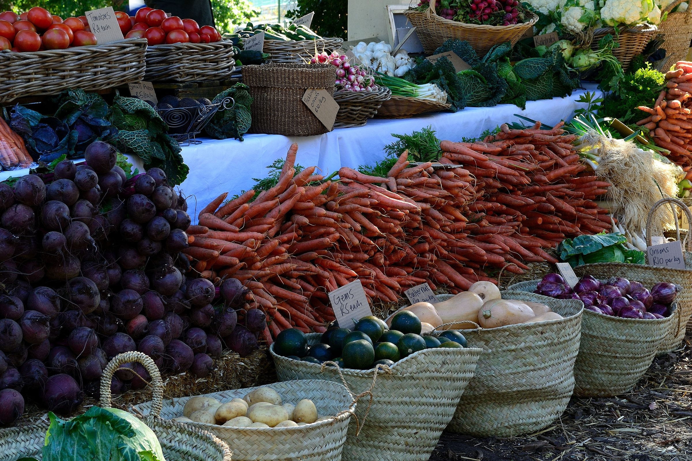

Quelle enseigne bio choisir en 2026 ? Nous comparons 8 enseignes sur le prix du panier, la gamme, le vrac, la livraison et les avis clients.


Choisissez deux enseignes, nous affichons leurs notes sur nos cinq critères, calculées depuis nos relevés de l'année.
Notes sur 10, issues de nos relevés de septembre 2026.
En magasin ou en ligne, les meilleures enseignes ne sont pas les mêmes.
Note globale sur 10, moyenne pondérée de nos cinq critères. Le classement bouge chaque mois avec les nouveaux relevés.
Voir la méthode de notationTout part de relevés datés en rayon et sur les sites, vérifiables un par un.
20 produits du quotidien, en rayon et en ligne, hors promotion, trois fois par trimestre.
Références par rayon d'après les catalogues en ligne, vérifiées dans deux magasins par enseigne.
Google Maps et Trustpilot sur douze mois, en écartant les avis sans texte.
Un email par semaine avec le classement du mois, les nouveaux comparatifs et les baisses de prix relevées en rayon.
Pas de publicité, désinscription en un clic.